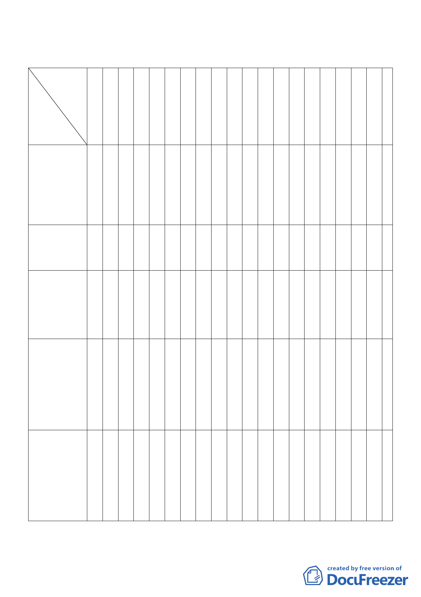

臺北市都市計畫委員會 96 年計畫案專案小組成員名單（※為召集人）
委員
案名
郭
張
委
員
桂
陳
委
員
武
錢
委
員
學
邊
委
員
泰
蔡
委
員
淑
蘇
委
員
瑛
委
員
肇
立
喻
委
員
肇
郭
委
員
瓊
姚
委
員
仁
江
委
員
彥
洪
委
員
寶
練
委
員
福
蔡
委
員
竹
林
委
員
建
陳
委
員
雄
倪
委
員
世
羅
委
員
孝
沈承
委辦
員
世人
林正陶明瑩敏
青瑩喜霆川星雄元文標賢宏
1.變更臺北孔廟
社教機構用地
暨孔廟東側第
三種住宅區為 ※ ○
○○○
○○
○
社教設施用地
（供臺北孔廟
使用）計畫案
2.變更文山區木
柵路 1 段中興 ○ ○ ○ ※
山莊附近地區
○
○○
主要計畫案
3.擬定臺北市中
正區齊東街保
存區及日式宿
舍風貌保存特
○
○○○※○ ○ ○
定專用區細部
計畫案
4.變更臺北市信義
區福德段四小段
135 地號等 7 筆
保護區土地為宗 ○ ○ ○ ※ ○ ○
教特定專用區
○○
（松山慈惠堂）
主要計畫暨擬定
細部計畫案
5.變更台北市內
湖區內湖路 1
段北勢湖第二
種工業區及新 ○ ※
明路兩側第三
○○○
○
種工業區為科
技工業區計畫
案
陳
福
隆
蔡
昇
晃
張
蓉
真
陳
福
隆
陳
○福
隆
一一